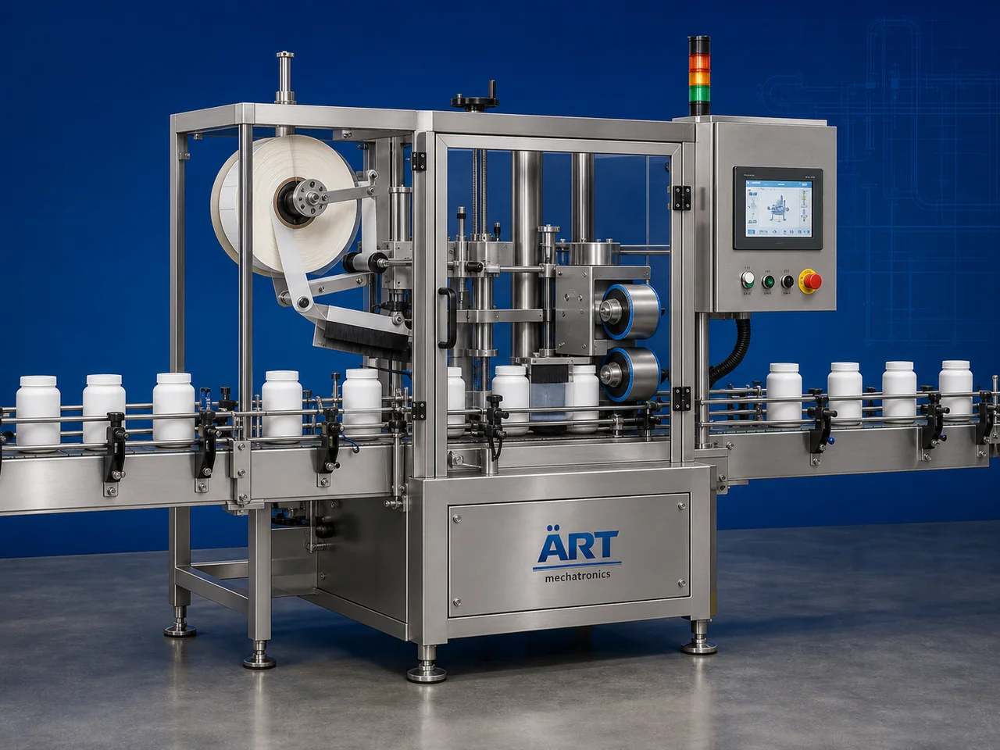

Wrap Around Labelling Machine (Automatic Container Sticker Labeling System)
A Wrap Around Labelling Machine, also known as a Sticker Labeling Machine, Container Label Applicator, Automatic Wrap Around Labeler, or Industrial Sticker Labeling System, is an advanced industrial packaging solution designed for automatic container feeding, label dispensing, wraparound sticker…

About the Wraparound Labelling
Wrap around labeling systems are widely used for: ✔ Bottle sticker labeling ✔ Jerry can label application ✔ Canister wraparound labeling ✔ Drum and barrel labeling ✔ Jar and jug sticker application ✔ Gallon container branding ✔ FMCG packaging labeling ✔ Industrial product identification
The machine improves: ✔ Packaging appearance ✔ Brand presentation ✔ Label placement accuracy ✔ Product traceability ✔ Packaging consistency ✔ Production efficiency ✔ Retail shelf appeal
Industrial wrap around labeling machines use: ✔ Automatic label dispensing systems ✔ Servo synchronized conveyor systems ✔ PLC and HMI automation controls ✔ Precision label application rollers ✔ Sensor-based positioning systems
to automatically apply labels onto containers with superior alignment accuracy and high production efficiency.
Wrap around labeling machines are widely used in industries such as:
Food processing industries Beverage industries Chemical industries Cosmetic industries Pharmaceutical industries Lubricant industries Agrochemical industries FMCG industries
where premium branding, accurate labeling, and high-speed packaging operations are essential.
The machine is highly suitable for: ✔ Bottle wraparound labeling ✔ Jerry can sticker labeling ✔ Drum and barrel labeling ✔ Canister branding ✔ Gallon container labeling ✔ Industrial packaging identification
ART Mechatronics offers high-performance wrap around labeling machines, engineered for continuous industrial operation, precision label application performance, premium packaging appearance, and reliable long-term packaging automation.
Working Principle of Wrap Around Labelling Machine
- 1. Container Feeding Containers are automatically fed into labeling section through synchronized conveyor systems.
- 2. Label Dispensing Process Machine automatically dispenses labels from label rolls using servo synchronized application systems.
Advanced automation ensures accurate label positioning and smooth container handling.
- 3. Wrap Around Labeling Operation Machine handles: ✔ PET bottles ✔ Glass bottles ✔ Jerry cans ✔ Canisters ✔ Jars ✔ Jugs ✔ Drums ✔ Gallon containers ✔ Buckets
accurately and continuously.
- 4. Label Application & Pressing Process Machine performs: Wraparound labeling Sticker pressing Bubble-free label application Smooth label alignment
for premium retail and industrial packaging appearance.
- 5. Coding & Inspection Integration Optional systems include: Batch coding Date printing QR code printing Barcode printing Vision inspection systems
- 6. Finished Container Discharge Labeled containers discharged automatically for: Cartoning Case packing Warehouse storage Export shipment handling
Types of Wrap Around Labelling Machines
- 1. Bottle Wrap Around Labeling Machine Designed for: ✔ PET and glass bottle packaging applications
- 2. Jerry Can & Drum Labeling Machine Suitable for: ✔ Industrial liquid container labeling systems
- 3. Canister & Jar Labeling Machine Uses: ✔ Retail food and FMCG packaging systems
- 4. Bucket & Gallon Labeling Machine Designed for: ✔ Heavy-duty industrial packaging systems
- 5. Servo Driven Labeling Machine Suitable for: ✔ Precision high-speed labeling operations
- 6. Fully Automatic Wrap Around Labeling System Designed for: ✔ Complete industrial packaging automation lines
Industries Using Wrap Around Labelling Machines
🥤 Beverage Industry Water bottles, juices, beverages, and liquid product labeling systems. 🍅 Food Processing Industry Sauces, syrups, edible oils, and food container labeling systems. ⚗️ Chemical Industry Industrial liquids, solvents, and chemical container labeling systems. 🧴 Cosmetic & Personal Care Industry Perfumes, lotions, shampoos, and cosmetic packaging labeling systems. 🛢️ Lubricant Industry Lubricants, industrial oils, and heavy-duty container labeling systems. 🛒 FMCG Industry Consumer product and premium retail packaging labeling systems.
Features & Advantages
✔ High-speed automatic wrap around labeling operation ✔ Accurate and bubble-free label application systems ✔ Premium retail and industrial packaging appearance ✔ PLC and servo automation control systems ✔ Improves product branding and traceability ✔ Reduces manual labeling dependency ✔ Supports multiple container sizes and formats ✔ Reliable long-term industrial performance ✔ Smooth and continuous packaging line integration
Technical Highlights
Machine Type: Automatic wrap around labeling machine Industrial sticker labeling system Container label applicator Container Type: PET bottles Glass bottles Jerry cans Canisters Jars Drums Buckets Gallons Labeling Integration: Self adhesive label systems Servo label dispensing systems Sensor-based positioning systems Features: PLC control system Servo synchronization Touchscreen HMI Batch coding integration Automatic label alignment Applications: Food containers Chemical containers Cosmetic packaging Industrial drums Retail packaging containers Automation: Semi-automatic Fully automatic industrial systems
Turnkey Labeling Solutions
ART Mechatronics offers: Complete labeling systems Automatic sticker labeling solutions Packaging automation integration systems Conveyor synchronization systems Installation & commissioning After-sales service & AMC
Why Choose Art Mechatronics
Expertise in industrial packaging and automation systems Customized labeling solutions for multiple industries High-performance and accurate label application technology Advanced PLC and servo automation systems Proven industrial packaging performance across sectors
Applications
Beverage Packaging Plants Food Processing Industries Chemical Packaging Facilities Cosmetic Manufacturing Units Lubricant Packaging Plants FMCG Packaging Industries
Get pricing & specs for the Wraparound Labelling
Share the product, target capacity, current process and plant location. These details help our engineers discuss the right machine or line configuration.
One partner, from design to start-up
ART Mechatronics designs, manufactures, installs and commissions your Wraparound Labelling solution with regional presence in India, UAE and Thailand.